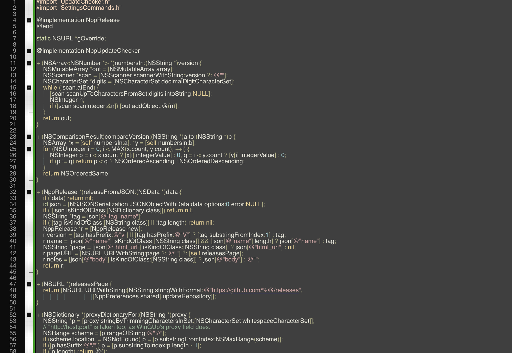

Notepad++ for macOS
A native Mac port of the Notepad++ text editor. Same engine, same files — no Wine, no emulation, no Windows code.
◆ Free & open source (GPL) ◆ Apple silicon + Intel ◆ macOS 11+ ◆ Signed & notarized
Install with Homebrew
brew install --cask tanderbold/tap/notepadmac…or download the notarized .dmg from Releases and drag NotepadMac to Applications.

- All 579 Windows menu commandsImplemented against Notepad++'s own sources, behaving the way they do on Windows.
- Same engine and filesScintilla and Lexilla, with Notepad++'s language, style, theme, function-list, shortcut and translation files.
- ~90 languages highlightedSyntax colouring, folding, function list, auto-completion — plus User Defined Languages.
- Search like Notepad++'sBoost-syntax regular expressions, Find in Files, Mark, incremental search, search results window.
- Plugins, built inJSON viewer, Compare, XML tools, FTP client and NppExec-style scripting ship inside the app.
- Extra toolsHashes (bcrypt, scrypt, Argon2, PBKDF2…), Base64/58/32, a password generator, HTTP Request.
- Knows your languageA trained model recognises the language of pasted or extension-less text — no rules, just data.
- Speaks ~90 languagesThe interface follows Notepad++'s own localisations, including the port's additions.
- Markdown previewThe document rendered live in a docked panel — CommonMark with tables.
- Spell check & moreSystem-engine spell checking, RTF/HTML export that keeps the colours, MIME and number conversions.
Write your own plugins
Plugins load the way they do on Windows — a dynamic library with a
small C interface, the full Scintilla API included. One file, one clang -dynamiclib, and your
command is in the Plugins menu. A complete
plugin in twenty lines · SDK reference.